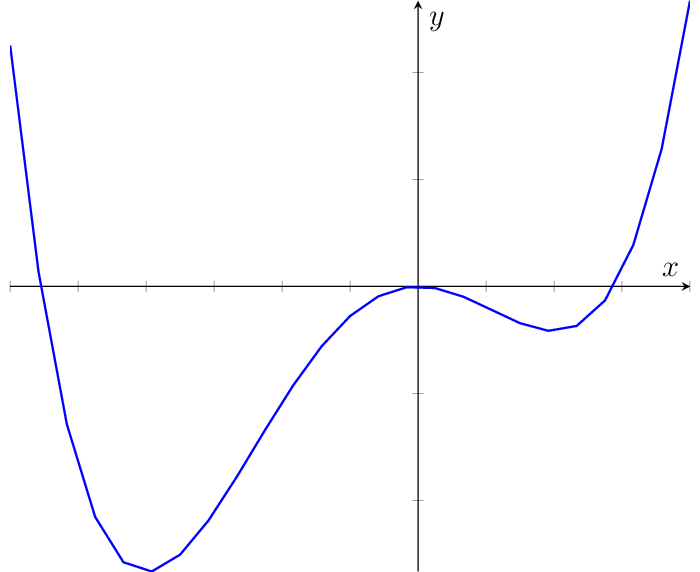

Analytic Solutions#
You probably know from your highschool math classes that every local minimizer \(x_0\) of a function \(f:\mathbb{R}\rightarrow\mathbb{R}\) is a stationary point: \(\frac{d}{dx}f(x_0)=0\). This is known as the first order neccessary condition. This property is easily understood, considering that the derivative indicates the slope of a function at a specified point. If we have a real-valued minimizer, then the slope is zero at that minimizer. If the slope would be positive, then we can go to the left to decrease the function value further, and if the slope is negative, we can go to the right. By means of this property, we can identify all the candidates that could be minimizers. Maximizers and saddle points are stationary points too. With the second order neccessary condition, we can filter further the minimizers from the pool of candidates. The second order neccessary condition states that at a minimizer the second derivative is nonnegative \(\frac{d^2}{dx^2}f(x_0)\geq 0\). The second derivative is the slope of the slope. If we have a minimizer, then the slope increases: first we go down, and then we go up. Hence, we need that the slope of the slope does at least not decrease.
Example 7
Let’s have a look at a seemingly simple example. The function \(f(x) = \frac14x^4 + \frac13x^3 -x^2\) is plotted below and we see that there are two minimizers \(x_1=-2\) and \(x_2=1\). The question is just if those are all minimizers, or if there is another one beyond the scope of what is plotted here.

To find all the minimizers of the function, we apply the first and second order neccessary condition. We compute the first and second derivative.
Now we solve the equation setting the first derivative to zero and get three stationary points:
Finding Stationary Points in higher dimensions#
The principles of the first and second order conditions can be generalized to functions \(f:\mathbb{R}^d\rightarrow \mathbb{R}\) mapping from a \(d\)-dimensional vector space to real values. The main difficulty is that we have now more to consider than just left and right when looking for a direction into which we could minimize the function further. In fact, any vector \(\vvec{v}\in\mathbb{R}^d\) could indicate a possible direction in which the function might decrease. Luckily, we can show that we just have to check one direction, given by the negative gradient, which points into the direction of steepest descent. The gradient indicates the slope of a function in the directions of the coordinates, which are called the partial derivatives. A partial derivative \(\frac{\partial f(\vvec{x})}{\partial x_i}\) is computed like a one-dimensional derivative by treating all variables except for \(x_i\) as a constant. The gradient gathers those partial derivatives in a vector. The transposed of the gradient is called the Jacobian.
With the gradient, we get a first order neccessary condition (FONC) for functions mapping from a vector space \(\mathbb{R}^d\).
Theorem 6 (FONC)
If \(\vvec{x}\) is a local minimizer of \(f:\mathbb{R}^d\rightarrow\mathbb{R}\) and \(f\) is continuously differentiable in an open neighborhood of \(\vvec{x}\), then
Likewise, a vector \(\vvec{x}\) is called stationary point if \(\nabla f(\vvec{x})=0\). The second order neccessary condition (SONC) uses the generation of the second order derivative to vector spaces, called the Hessian. We state this condition here for reasons of completeness, but we will not need this property for the machine learning models that we discuss in this course.
Theorem 7 (SONC)
If \(\vvec{x}\) is a local minimizer of \(f:\mathbb{R}^d\rightarrow\mathbb{R}\) and \(\nabla^2f\) is continuous in an open neighborhood of \(\vvec{x}\), then
A matrix \(A\in\mathbb{R}^{d\times d}\) is positive semidefinite if
Example 8
{kind=link}
Fig. 1 The Rosenbrock function#
In this example we apply FONC and SONC to find the minimizers of the Rosenbrock function, which is given by
In order to apply FONC, we need to compute the gradient. We do so by computing the partial derivatives. The partial derivatives are computed by the same rules as you know it from computing the derivative of a one-dimensional function.
FONC says that every minimizer has to be a stationary point. Stationary points are the vectors at which the gradient of \(f\) is zero. We compute the set of stationary points by setting the gradient to zero and solving for \(\vvec{x}\).
According to FONC we have a stationary point at \(\vvec{x}=(1,1)\). Now we check with SONC if the stationary point could be a minimizer (it could also be a maximizer or a saddle point). SONC says that every minimizer has a positive definite Hessian. Hence, we require the Hessian, the second derivative of the Rosenbrock function. To that end, we compute the partial derivatives of the partial derivatives:
The Hessian is given by
We insert our stationary point \(\vvec{x}_0=(1,1)\) into the Hessian and get
The last inequality follows because the sum of quadratic terms can not be negative. We conclude that the Hessian at our stationary point is positive semi-definite. As a result, FONC and SONC yield that \(\vvec{x}=(1,1)\) is the only possible local minimizer of \(f\).
Nice, we have now a strategy yo find local minimizers if we have an unconstrained objective with an objective function which is continuously differentiable. Let’s consider a more complex setting, introducing constraints.
Example 9 (Solving of a dual)
We solve the following constrained optimization problem:
Geometrically, the problem looks as follows:
We have an objective function that is visualized over the level sets (the rings). Each ring indicates the vectors \(\vvec{w}\) that return the same function value. We see that the minimum is at \((0,0)\), but that minimum does not lie in the feasible set \(\mathcal{C}\).
To solve this constrained objective, we formulate the dual, which requires the Lagrangian first. To formulate the Lagrangian, we put the constraints into the form \(g(\vvec{w})\geq 0\):
The Lagrangian is then given by
We plug in the minimizer \(\vvec{w}\) defined above in the Lagrangian and obtain the dual objective function:
Hence, we need to maximize the function above, which is equivalent to minimizing the negative dual function. The negative dual function is convex, since it can be written as
which is the sum of a convex and an affine function. Hence, to solve the dual objective, we set again the gradient to zero:
which is the case for \(\lambda_1=0\) and \(\lambda_2=2\). To get the solution nof our primal objective, we plug in the optimal \(\bm{\lambda}\) in the optimal \(\vvec{w}\) definition and get